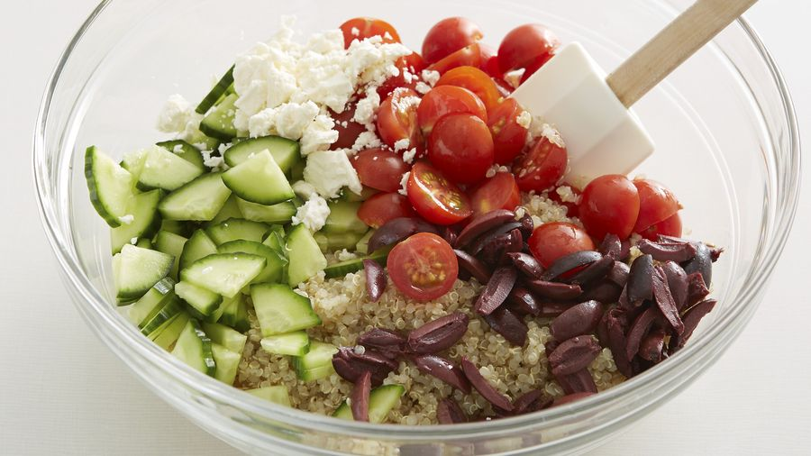

Tornar a la pàgina principal
Amanida de quinoa
Índex de continguts
Ingredients
Pas a pas
Resultat final
Ingredients
150 g de quinoa
1 cogombre
100 g de tomàquets cherry
50 g de formatge feta
Oli, sal i pebre
Pas a pas
Renta
150 g
de quinoa i cou amb
300 ml
d’aigua durant
15 minuts
.
Talla el
cogombre
i els
tomàquets
a trossets.
Barreja-ho tot amb el
formatge fet, oli, sal i pebre.

Resultat final